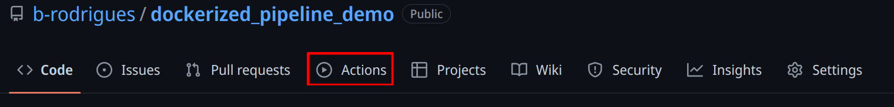

13 Continuous Integration with GitHub Actions
13.1 Introduction
We are almost at the end of our journey. In the previous chapters, we built reproducible environments with Nix, organised our code into pure functions, made them robust with error handling and debugging, proved correctness with unit tests, managed our collaboration with Git, and bundled everything into shareable packages. We can now run our pipelines in a 100% reproducible way.
However, all of this still requires manual steps. And maybe that’s not a problem; if your environment is set up and users only need to drop into a Nix shell and run the pipeline, that’s already a huge improvement. But you should keep in mind that manual steps don’t scale. Imagine you are part of a team that needs to quickly ship products to clients. Several people contribute to the product, and you might need to work on multiple projects in the same day. You and your teammates should be focusing on writing code, not on repetitive tasks like building images or running tests. Ideally, we would want to automate these steps. That is what we are going to learn in this chapter.
This chapter will introduce you to Continuous Integration (CI) with GitHub Actions. You will learn how to set up workflows that automatically run your tests when you push code, how to build Docker images and recover artifacts, and how to run your pipelines directly from GitHub’s servers. Because we’re using Git to trigger all the events and automate the whole pipeline, this approach is sometimes called GitOps.
You may have heard the term “CI/CD,” where CD stands for Continuous Deployment or Continuous Delivery. We will focus on CI in this chapter. Continuous Deployment (automatically pushing results to a database, dashboard, or API) is highly specific to your organisation and infrastructure. What we cover here, however, gives you the foundation: once your pipeline runs reliably on CI, the “deployment” step is just one more workflow job pointing to wherever your results need to go.
13.2 Getting your repo ready for Github Actions
Obviously, you should use a project that is versioned on GitHub. Use the package we’ve developed previously. If you go on its GitHub page, you should see an “Actions” tab on top:
This will open a new view where you can select a lot of available, ready to use actions. “Actions” are premade scripts that execute some commands you might need: such as setting up R, Python, running tests, etc. Since we’re using Nix, we don’t really need to look for any actions to set up our environments. However, we might want to use some pre-made actions to upload artifacts for instance.
To actually configure our repository to run actions, we need to edit a file in our project under the .github/workflows directory (create them if needed). In it, write a yaml file called hello.yaml and write the following in it:
name: Hello world
on: [push]
jobs:
say-hello:
runs-on: ubuntu-latest
steps:
- run: echo "Hello from Github Actions!"
- run: echo "This command is running from an Ubuntu VM each time you push."Let’s study this workflow definition line by line:
name: Hello worldSimply gives a name to the workflow.
on: [push]When should this workflow be triggered? Here, whenever something gets pushed.
jobs:What is the actual things that should happen? This defines a list of actions.
say-hello:This defines the say-hello job.
runs-on: ubuntu-latestThis job should run on an Ubuntu VM. You can also run jobs on Windows or macOS VMs, but this uses more compute minutes than a Linux VM (which doesn’t matter for public projects. For private projects, the amount of compute minutes is limited).
steps:What are the different steps of the job?
- run: echo "Hello from Github Actions!"First, run the command echo "Hello from Github Actions!". This commands runs inside the VM. Then, run this next command:
- run: echo "This command is running from an Ubuntu VM each time you push."If we take a look at the commit we just pushed, on GitHub, we see this yellow dot next to the commit name. This means that an action is running. We can then take a look at the output of the job, and see that our commands, defined with the run statements in the workflow file, succeeded and echoed what we asked them.
13.3 Nix and GitHub Actions
To set up Nix on GitHub Actions you can use several steps (create a new file called run-tests.yaml):
- name: Install Nix
uses: cachix/install-nix-action@v31
with:
nix_path: nixpkgs=https://github.com/rstats-on-nix/nixpkgs/archive/r-daily.tar.gz
- name: Setup Cachix
uses: cachix/cachix-action@v15
with:
name: rstats-on-nixIf your repository contains a flake.nix and flake.lock (as a T project does), the same environment you’ve been using locally can be used on GitHub Actions just as easily. The committed flake pins the exact T version and every dependency, so there is nothing to generate — nix develop reads it directly:
- name: Run in the project environment
run: nix develop --command t --versionYou can then use the shell to run whatever you need. For example, if you’re developing a package, you could run unit tests on each push:
- name: devtools::test() via nix develop
run: nix develop --command Rscript -e "devtools::test(stop_on_failure = TRUE)"stop_on_failure = TRUE is needed to make the step fail if there’s an error, otherwise, the step would run successfully, even with failing tests.
Of course, if you’re developing a Python package, use nix develop --command pytest instead to run the tests.
I highly recommend you run tests when pull requests get opened:
on:
push:
branches: [ "main" ]
pull_request:
branches: [ "main" ]This will ensure that if someone contributes to your project, you know immediately if what they did breaks tests or not. If it does, ask them to fix the code until tests pass.
13.4 Running a T Pipeline on GitHub Actions
Now that we know how to set up Nix on GitHub Actions, running a T pipeline is straightforward. Recall from Chapter 4 that T is distributed exclusively via Nix: you never install it in the traditional sense. A T project pins the exact version of T it uses in its committed flake.nix and flake.lock files, and nix develop drops you into a shell where that pinned t executable is available alongside all of your R, Python, and Julia runtimes.
That means “installing T” on CI is really just “installing Nix.” Once Nix is present, the project’s own flake takes care of the rest. Here is a complete workflow that runs our pipeline on every push and pull request to main:
name: T Pipeline
on:
push:
branches: [ "main" ]
pull_request:
branches: [ "main" ]
jobs:
build:
runs-on: ubuntu-latest
steps:
- uses: actions/checkout@v4
- name: Install Nix
uses: cachix/install-nix-action@v31
with:
extra_nix_config: |
experimental-features = nix-command flakes
substituters = https://cache.nixos.org https://rstats-on-nix.cachix.org
trusted-public-keys = cache.nixos.org-1:6NCHdD59X431o0gWypbMrAURkbJ16ZPMQFGspcDShjY= rstats-on-nix.cachix.org-1:vdiiVgocg6WeJrODIqdprZRUrhi1JzhBnXv7aWI6+F0=
- name: Setup Cachix
uses: cachix/cachix-action@v15
with:
name: rstats-on-nix
- name: Run pipeline
run: nix develop --command t run --failfast src/pipeline.tThe extra_nix_config block enables Nix flakes and points Nix at the rstats-on-nix binary cache, so R packages are downloaded pre-built rather than compiled from source. The Setup Cachix step registers that cache so the runner can pull from it.
The important line is the last one:
run: nix develop --command t run --failfast src/pipeline.tnix develop enters the project’s environment using the committed flake.lock, which is where the T version is pinned. We then run t run on src/pipeline.t, exactly as we would locally. The --failfast flag makes the step, and therefore the whole workflow, fail as soon as any node errors, which is what you want on CI: a red build should mean something is actually broken.
A couple of notes:
- If you have changed
tproject.toml(added a package, bumped a version), runt updatefirst to regenerateflake.nixandflake.lock, then commit those files, the same one-time sync you do locally. - Chapter 8 showed the
pipeline_to_ga()function, which generates a workflow like this one automatically, including artifact caching. Writing it by hand, as here, just makes each moving part explicit.
13.4.1 Caching T pipeline outputs between runs
Nix already caches builds in its store, but a fresh CI runner starts with an empty store, so every node is rebuilt from scratch on the first run. T has native functions for shipping a pipeline’s cached artifacts between runs, so a second run can skip the work a first run already did.
export_artifacts(p, archive_path) bundles the cached Nix artifacts of every node in p into a single portable archive file. All nodes must already exist in the local store, so you call it right after a successful build:
build_pipeline(p)
export_artifacts(p, "artifacts.tar")On the next run, import_artifacts() restores those artifacts into the local Nix store before you build, so unchanged nodes are pulled from the archive instead of rebuilt:
import_artifacts("artifacts.tar")
build_pipeline(p)The two-argument form, import_artifacts(p, "artifacts.tar"), additionally verifies that the imported store paths match the pipeline’s expected signatures, catching a stale or mismatched archive.
To see what an archive contains without touching the local store, use inspect_artifacts(). It loads the archive into a temporary store and returns a data frame with one row per node:
inspect_artifacts("artifacts.tar")
-- columns: node, store_path, hash, size_bytes, referencesOn GitHub Actions the pattern is to export the archive after a successful build and upload it as a workflow artifact, then download and import it at the start of the next run. Combined with the rstats-on-nix binary cache above, this keeps even a cold runner from recompiling anything that has not changed.
13.5 Running a dockerized workflow
This next example can be found in this repository1. This example doesn’t use Nix or T, but the point here is to show how a Docker container can be executed on GitHub Actions, and artifacts can be recovered. The process is always the same, regardless is inside the Docker image. If you want to follow along, fork this repository.
This is what our workflow file looks like:
name: Reproducible pipeline
on:
push:
branches: [ "main" ]
pull_request:
branches: [ "main" ]
jobs:
build:
runs-on: ubuntu-latest
steps:
- uses: actions/checkout@v5
- name: Build the Docker image
run: docker build -t my-image-name .
- name: Docker Run Action
run: docker run --rm --name my_pipeline_container -v /github/workspace/fig/:/home/graphs/:rw my-image-name
- uses: actions/upload-artifact@v4
with:
name: my-figures
path: /github/workspace/fig/For now, let’s focus on the run statements, because these should be familiar:
run: docker build -t my-image-name .and:
run: docker run --rm --name my_pipeline_container -v /github/workspace/fig/:/home/graphs/:rw my-image-nameThe only new thing here, is that the path has been changed to /github/workspace/. This is the home directory of your repository, so to speak. Now there’s the uses keyword that’s new:
uses: actions/checkout@v5This action checkouts your repository inside the VM, so the files in the repo are available inside the VM. Then, there’s this action here:
- uses: actions/upload-artifact@v4
with:
name: my-figures
path: /github/workspace/fig/This action takes what’s inside /github/workspace/fig/ (which will be the output of our pipeline) and makes the contents available as so-called “artifacts”. Artifacts are the outputs of your workflow. In our case, as stated, the output of the pipeline. So let’s run this by pushing a change, and let’s take a look at these artifacts!
After the action done running, you will be able to download a zip file containing the plots. It is thus possible to rerun our workflow in the cloud. This has the advantage that we can now focus on simply changing the code, and not have to bother with boring manual steps. For example, let’s change this target in the _targets.R file:
tar_target(
commune_data,
clean_unemp(
unemp_data,
place_name_of_interest = c(
"Luxembourg", "Dippach",
"Wiltz", "Esch/Alzette",
"Mersch", "Dudelange"),
col_of_interest = active_population)
)I’ve added “Dudelange” to the list of communes to plot. Pushing this change to GitHub triggers the action we’ve defined before. The plots (artifacts) get refreshed, and we can download them. Take a look and see that Dudelange was added in the communes.png plot!
It is also possible to “deploy” the plots directly to another branch, and do much, much more. I just wanted to give you a little taste of Github Actions (and more generally GitOps). The possibilities are virtually limitless, and I still can’t get over the fact that Github Actions is free for public repositories.
13.6 Building a Docker image and pushing it to a registry
It is also possible to build a Docker image and have it made available on an image registry. You can see how this works on this repository2. This images can then be used as a base for other reproducible pipelines, as in this repository3. Why do this? Well because of “separation of concerns”. You could have a repository which builds in image containing your development environment: this could be an image with a specific version of R and R packages built with Nix. And then have as many repositories as projects that run pipelines using that development environment image as a basis. Simply add the project-specific packages that you need for each project.
13.7 A Complete T Pipeline Workflow on GitHub Actions
The previous section showed the essential workflow in a few lines. Here is a complete, annotated version that also inspects the built pipeline and reads a node’s result. Because Nix handles all dependencies reproducibly, you don’t need Docker as an intermediary. The tlang4 repository contains several complete examples; here we will walk through the key steps.
The workflow triggers on pushes and pull requests to main:
on:
pull_request:
branches: [main, master]
push:
branches: [main, master]After checking out the repository and installing Nix (with Cachix for faster builds), there is no environment-generation step. A T project commits its flake.nix and flake.lock, which pin the exact T version and every dependency, and the pipeline itself is the committed src/pipeline.t file. nix develop reads the flake directly, so nothing needs to be generated.
The core step builds the pipeline exactly as you would locally:
- name: Build pipeline
run: nix develop --command t run src/pipeline.tYou can validate the pipeline’s structure with t check, which inspects the pipeline without running any Nix builds:
- name: Check pipeline structure
run: nix develop --command t check src/pipeline.tFinally, read a node’s result to confirm the pipeline produced what you expect:
- name: Show result
run: nix develop --command t run --expr 'read_node("confusion_matrix")'13.7.1 Caching Pipeline Outputs Between Runs
While Nix caches derivations, CI runners are ephemeral: each run starts fresh. To avoid rebuilding the entire pipeline every time, T provides export_artifacts() and import_artifacts() to persist outputs between runs.
Before building, check if cached outputs exist and import them:
- name: Import cached outputs if available
run: |
if [ -f "../outputs/my_pipeline/pipeline_outputs.tar" ]; then
nix develop --command t import_artifacts src/pipeline.t ../outputs/my_pipeline/pipeline_outputs.tar
else
echo "No cached outputs found, will build from scratch"
fiAfter building, export the outputs so they can be reused:
- name: Export outputs to avoid rebuild
run: |
mkdir -p ../outputs/my_pipeline
nix develop --command t export_artifacts src/pipeline.t ../outputs/my_pipeline/pipeline_outputs.tarFinally, commit the cached outputs back to the repository:
- name: Push cached outputs
run: |
cd ..
git config --global user.name "GitHub Actions"
git config --global user.email "actions@github.com"
git pull --rebase --autostash origin main
git add outputs/my_pipeline/pipeline_outputs.tar
if git diff --cached --quiet; then
echo "No changes to commit."
else
git commit -m "Update cached pipeline outputs"
git push origin main
fiThis pattern ensures that only changed nodes are rebuilt on subsequent runs.
13.7.2 The Easy Way: pipeline_to_ga()
If the above seems like a lot of boilerplate, T provides a helper function that generates a complete GitHub Actions workflow for you:
pipeline_to_ga(p, file = ".github/workflows/pipeline.yml")This creates a .github/workflows/pipeline.yml file that handles everything: installing Nix, setting up Cachix, building the pipeline, and importing and exporting artifacts. It stores the cached Nix store in a dedicated t-runs branch, keeping your main branch clean while persisting the cached outputs between runs.
For most projects, running pipeline_to_ga() once and committing the generated workflow file is all you need to get your pipeline running on CI.
13.8 GitHub Actions without Nix
If you’re not using Nix, you’ll have to set up GitHub Actions manually. Suppose you have a package project and want to run unit tests on each push. See for example the {myPackage} package, in particular this file5. This action runs on each push and pull request on Windows, Ubuntu and macOS:
on:
push:
branches: [ "main" ]
pull_request:
branches: [ "main" ]
jobs:
rcmdcheck:
runs-on: ${{ matrix.os }}
strategy:
matrix:
os: [ubuntu-latest, windows-latest, macos-latest]Several steps are executed, all using pre-defined actions from the r-lib project:
steps:
- uses: actions/checkout@v4
- uses: r-lib/actions/setup-r@v2
- uses: r-lib/actions/setup-r-dependencies@v2
with:
extra-packages: any::rcmdcheck
needs: check
- uses: r-lib/actions/check-r-package@v2An action such as r-lib/actions/setup-r@v2 will install R on any of the supported operating systems without requiring any configuration from you. If you didn’t use such an action, you would need to define three separate actions: one that would be executed on Windows, on Ubuntu and on macOS. Each of these operating-specific actions would install R in their operating-specific way.
Check out the workflow results to see how the package could be improved here6.
Here again, using Nix simplifies this process immensely. Look at this workflow file from T’s repository here7. Setting up the environment is much easier, as is running the actual test suite.
13.9 Advanced patterns
Now that you understand the basics, let’s look at some more advanced patterns that will make your CI workflows more efficient and informative.
13.9.1 Caching with Cachix
Building Nix environments from scratch on every CI run can be slow. Cachix solves this by providing a binary cache for your Nix derivations. Once you build something, subsequent runs can download the pre-built binaries instead of rebuilding from source.
To use Cachix, you first need to create a free account at cachix.org8 and create a cache. Then, generate an auth token and add it as a secret in your GitHub repository settings (under Settings → Secrets and variables → Actions). Call it something like CACHIX_AUTH.
Here is a workflow that builds your development environment and pushes the results to your Cachix cache:
name: Update Cachix cache
on:
push:
branches: [main]
jobs:
build-and-cache:
runs-on: ubuntu-latest
steps:
- uses: actions/checkout@v4
- name: Install Nix
uses: DeterminateSystems/nix-installer-action@main
- uses: cachix/cachix-action@v15
with:
name: your-cache-name
authToken: '${{ secrets.CACHIX_AUTH }}'
- name: Build and push to cache
run: |
nix build .#devShell
nix-store -qR --include-outputs $(nix eval --raw .#devShell) | cachix push your-cache-nameThe key line here is the nix-store command at the end. It queries all the dependencies of your build and pushes them to Cachix. The next time you or anyone else runs this workflow, the cachix/cachix-action will automatically pull from your cache, dramatically speeding up the build.
If you want to build on both Linux and macOS (since Nix binaries are platform-specific), you can use a matrix:
jobs:
build-and-cache:
runs-on: ${{ matrix.os }}
strategy:
matrix:
os: [ubuntu-latest, macos-latest]13.9.2 Storing outputs in orphan branches
When running a pipeline on CI, you often want to keep the outputs (plots, data, reports) without committing them to your main branch. A clean solution is to store them in an orphan branch. An orphan branch has no commit history and is completely separate from your main code.
Here is the pattern:
- name: Check if outputs branch exists
id: branch-exists
run: git ls-remote --exit-code --heads origin pipeline-outputs
continue-on-error: true
- name: Create orphan branch if needed
if: steps.branch-exists.outcome != 'success'
run: |
git checkout --orphan pipeline-outputs
git rm -rf .
echo "Pipeline outputs" > README.md
git add README.md
git commit -m "Initial commit"
git push origin pipeline-outputs
git checkout -
- name: Push outputs to branch
run: |
git config --local user.name "GitHub Actions"
git config --local user.email "actions@github.com"
git fetch origin pipeline-outputs
git worktree add ./outputs pipeline-outputs
cp -r _outputs/* ./outputs/
cd outputs
git add .
git commit -m "Update outputs" || echo "No changes"
git push origin pipeline-outputsThis pattern first checks if the branch exists using git ls-remote. If not, it creates an orphan branch. Then it uses git worktree to work with both branches simultaneously, copies the outputs, and pushes them. T uses this pattern to store pipeline outputs between runs.
13.9.3 Creating workflow summaries
GitHub Actions has a built-in feature for creating rich summaries that appear directly on the workflow run page. You write Markdown to a special file path stored in the GITHUB_STEP_SUMMARY environment variable.
- name: Create summary
run: |
echo "## Pipeline Results 🎉" >> $GITHUB_STEP_SUMMARY
echo "" >> $GITHUB_STEP_SUMMARY
echo "| Metric | Value |" >> $GITHUB_STEP_SUMMARY
echo "|--------|-------|" >> $GITHUB_STEP_SUMMARY
echo "| Tests passed | 42 |" >> $GITHUB_STEP_SUMMARY
echo "| Coverage | 87% |" >> $GITHUB_STEP_SUMMARYYou can also generate the summary dynamically from your R or Python code:
- name: Generate summary from R
run: |
nix develop --command Rscript -e '
results <- readRDS(\"results.rds\")
cat(\"## Analysis Complete\n\n\", file = Sys.getenv(\"GITHUB_STEP_SUMMARY\"), append = TRUE)
cat(paste(\"Processed\", nrow(results), \"observations\n\"), file = Sys.getenv(\"GITHUB_STEP_SUMMARY\"), append = TRUE)
'"This is particularly useful for:
- Showing test results at a glance
- Displaying key metrics from your analysis
- Providing download links to artifacts
- Reporting any warnings or issues
The summary appears right on the Actions tab, making it easy for collaborators to see what happened without digging through logs.
13.10 Conclusion
This chapter introduced Continuous Integration with GitHub Actions, the final piece of our reproducible workflow.
Key takeaways:
- Automation removes manual steps: Every push triggers tests, builds, and deployments without human intervention
- Nix simplifies CI setup: The same
flake.nixyou use locally works on GitHub Actions, eliminating “works on my machine” problems - Cachix speeds up builds: By caching Nix derivations, subsequent runs avoid rebuilding unchanged dependencies
pipeline_to_ga()handles the boilerplate: One function call generates a complete workflow for running T pipelines on CI- Artifact caching persists outputs: Using
export_artifacts()and an orphan branch, pipeline outputs survive between ephemeral CI runs
With continuous integration in place, your reproducible analytical pipeline is truly automated. Push your code, and GitHub takes care of the rest: running tests, building your environment, executing your pipeline, and storing the results. This frees you to focus on what matters: the analysis itself.
https://github.com/b-rodrigues/dockerized_pipeline_demo↩︎
https://github.com/b-rodrigues/ga_demo↩︎
https://github.com/b-rodrigues/ga_demo_rap/tree/main↩︎
https://github.com/b-rodrigues/tlang↩︎
https://github.com/b-rodrigues/myPackage/blob/main/.github/workflows/rcmdcheck.yaml↩︎
https://github.com/b-rodrigues/myPackage/actions/runs/12348361696↩︎
https://github.com/b-rodrigues/tlang/blob/main/.github/workflows/unit-tests.yaml↩︎
https://cachix.org↩︎